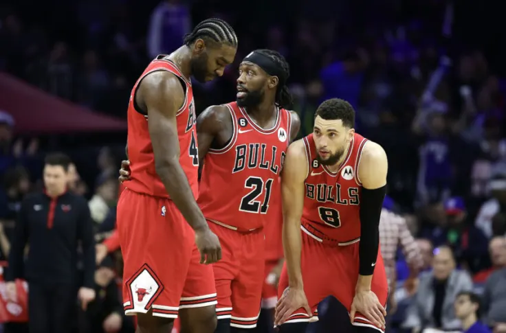

Chicago Bulls
Čikago bulsi (engl. Chicago Bulls) su američki košarkaški klub iz Čikaga, Ilinois. Igraju u NBA ligi (Centralna divizija). Čikago bulsi su formirani 1966. godine i jedini klub u istoriji NBA lige koji nije menjao logo. Svih 6 titula NBA lige je osvojio u 90-tim godinama 20. veka. U ovom klubu igrao je i verovatno najbolji košarkaš svih vremena Majkl Džordan, koji je zajedno sa saigračem Skotijem Pipenom osvojio titule prvaka NBA lige 1991, 1992, 1993, 1996, 1997. i 1998. U sezoni 1995/1996, Bulsi su imali odnos pobeda i poraza 72-10, što je bio najbolji rezultat svih vremena u jednoj NBA sezoni, do sezone 2015/16 kada je ekipa Golden Stejt voriorsi oborila rekord sa ostvarena 73 trijumfa i samo 9 poraza. Majkl Džordan i Derik Rouz su jedini košarkaši ove franšize koji su proglašeni za najboljeg košarkaša NBA lige.
Istorija
Franšiza Čikago bulsa je formirana 1966. godine kada je pristupila NBA ligi. Klub je formirao Dik Klajn koji je bio i vlasnik franšize. To je bila treća franšiza iz grada Čikaga posle Čikago stegsa i Čikago Pekersa (danas Vašington vizardsa). Bulsima je nakon drafta 1966. godine dozvoljeno da pokupe po jednog igrača od ostalih timova kako bi mogli da formiraju tim za novu sezonu. U prvoj sezoni Bulsi su došli do skora od 33 pobede i 48 poraza. Nakon toga su postepeno rasli da bi ubrzo bili i redovni uesnici plej-ofa. Sa uspesima rasla je i poseta publike na preko 10.000 posetilaca.[2]. 1972. godine Bulsi su došli do rekorda franšize od 57 pobeda i 25 poraza u regularnom delu sezone. Tokom 70-tih tim su predvodili Džeri Sloun, krila Bob Lov i Čet Voker, plejmejker Norm Van Lajr kao i centar Kliford Rej. Nakon katastrofalnog skora od 50 poraza 1976. godine generalni menadžer Pat Vilijams je dobio otkaz, a ubrzo i glavni trener Dik Mota kojeg zamenjuje Ed Bedžer.
1976. godine Klajn je prodao franšizu Virtz familiji, dugogodišnjim vlasnicima hokejaškog kluba Čikago blekhoksa. Obzirom da su novi vlasnici bili indeferentni prema košarci, ulagali su veoma malo u napredak tima. Okosnicu tima činili su Artis Gilmor i Redži Tajs. 1979. godine Bulsi su izgubili pravo na draft lutriji da biraju prvi, pa su umesto Medžika Džonsona morali da se zadovolje izborom Dejvida Grinvuda kao druog pika tog drafta. Bulse kao franšizu je pratilo malo gledalaca zbog loših rezultata, i vlasnik je tražio načina da izmesti klub i da ga proda. Međutim ono što će uslediti će okrenuti franšizu u poptunosti.
Leta 1984. godine Bulsi su imali pravo na trećeg pika NBA drafta, posle Portlanda i Hjustona. U po mnogima najboljem draftu svih vremena[3] Hjuston je izabrao Hakima Olajdžuvona a Portland Klajda Drekslera.[4] Džikago na trećoj poziciji bira Majkla Džordana koji je igrao fantastično na koledžu Severna Karolina. Novi vlasnik Džeri Rejnsdorf i glavni menadžer Džeri Kraus su odlučili da grade igru i tim oko Majkla Džordana što će im se višestruko isplatiti u godinama koje slede. Već u prvoj sezoni Majkl Džordan je postavio rekord franšize u postignutim poenima i ukradenim loptama. Predvodio je Bulse do plasmana u plej of gde su izgubili u prvoj rundi od Milvokija. U sledećoj sezoni u tim dolazi Džon Pekson a u danu NBA drafta, trejdovima dobijaju krilno centra Čarlsa Ouklija. Tim je bio napadački mnogo potentniji, međutim Džordan je propustio deo sezone zbog povrede pa je Čikago u plej-of ušao sa osme pozicije Istočne konferencije. U prvoj rundi ih čekaju Boston seltiksi, koji ih dobijaju predvođeni Leri Birdom. Ipak, Majkl Džordan uspeva da u pomenutoj seriji postavi rekord plej-ofa sa 63 postignuta poena i to u Bostonu.
6. oktobra 1993. godine čitav košarkaški svet je šokirala infromacija da Majkl Džordan napušta košarku, tri meseca nakon ubistva njegovog oca.[8] U takvoj situaciji Pipen je promovisan u vođu ekipe Bulsa, a iz Evrope dolazi hrvatski košarkaš Toni Kukoč. Uprkos odlasku Džordana, tim dolazi do 55 pobeda u sezoni što je veoma dobar rezultat. Međutim u drugoj rundi plej-ofa gube od Niksa, koji stižu i do NBA finala gde gube od Hjustona.
rva kompletna pravila košarkaške igre štampana su u Beogradu 1924. Zanimljivost o početku košarke u Srbiji koja je objavljena u dnevnom listu "Politika" od 18. aprila 1923. u rubrici „Sport"